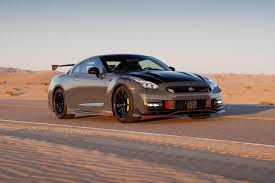
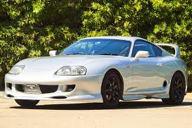
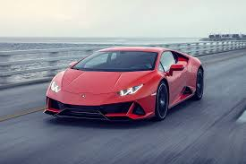

Nissan GTR
The Nissan GT-R, often called "Godzilla," is a high-performance sports car revered for its power, precision, and advanced engineering. Debuting in 1969 as the Skyline GT-R, it has become an icon in the automotive and racing world. The modern GT-R, introduced in 2007, features a twin-turbocharged V6 engine and an innovative all-wheel-drive system, delivering breathtaking acceleration and handling. Its aggressive design and cutting-edge technology, like the ATTESA E-TS Pro system, set it apart from competitors. Loved by car enthusiasts and tuners, the GT-R combines performance and practicality. It remains a benchmark for speed and innovation in the supercar segment.

Toyota Supra
The Toyota Supra is a legendary sports car celebrated for its performance, reliability, and sleek design. First introduced in 1978, the Supra has evolved through generations, becoming an icon in the automotive and motorsport world. Known for its powerful engines, like the revered 2JZ in the fourth generation, it offers thrilling speed and precision handling. The latest GR Supra, co-developed with BMW, blends cutting-edge technology with classic Supra DNA. Its aggressive styling and dynamic performance make it a favorite among car enthusiasts. The Supra’s legacy is firmly cemented in racing, pop culture, and the hearts of automotive fans worldwide.

Lamborghini
Lamborghini is an Italian luxury sports car manufacturer renowned for its high-performance vehicles and striking designs. Founded by Ferruccio Lamborghini in 1963, the brand is a symbol of innovation and exclusivity in the automotive world. Iconic models like the Aventador, Huracán, and Urus showcase a perfect blend of speed, power, and luxury. Lamborghini's signature scissor doors and aggressive styling set it apart from competitors. Known for its roaring V10 and V12 engines, the brand delivers an adrenaline-packed driving experience. Today, Lamborghini is part of the Volkswagen Group, continuing to push the boundaries of automotive excellence.